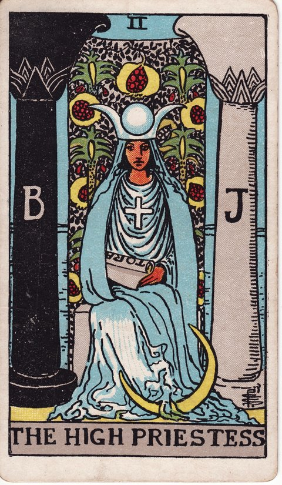

메이저 아르카나 · 타로 카드 백과사전
여사제 (The High Priestess)

정방향
키워드: 예리한 직감 · 고요한 통찰 · 숨겨진 진실 · 말없는 확신 · 고요 속 신호 · 속내를 읽는 눈
조언: 논리로 설명되지 않아도 마음 깊은 곳의 목소리를 믿고 따라가 보세요.
연애운
솔로
말보다 직감으로 상대의 마음을 알아차릴 수 있는 시기입니다. 서두르지 않고 지켜보면 상대의 진심이 자연스럽게 드러납니다.
커플
굳이 말하지 않아도 서로의 마음을 이해하는 깊은 교감이 이루어지는 시기입니다. 말로 다 표현하지 않아도 서로를 향한 믿음이 자연스럽게 깊어집니다.
재물운
소비
드러나지 않은 정보나 직감이 소비 결정에 도움이 되는 시기입니다. 충동보다 직관을 믿어보세요.
투자
겉으로 드러나지 않은 투자 기회를 직감으로 알아챌 수 있는 시기입니다. 다만 확신이 서기 전까지는 신중하게 접근하세요.
취업운
구직
이력서나 공고에 다 드러나지 않은 채용 기회를 직감으로 알아챌 수 있는 시기입니다. 관심 있던 곳에 먼저 연락해보는 적극성이 기회를 만들어줍니다.
이직
지금의 자리를 옮겨야 할지, 마음 깊은 곳의 목소리가 답을 알고 있는 시기입니다. 논리적으로 설명되지 않아도 스스로의 직감을 믿어볼 만합니다.
직장운
팀워크
겉으로 드러나지 않은 팀의 분위기나 흐름을 직감으로 알아채는 시기입니다. 예민하게 느낀 분위기를 무시하지 말고 조심스럽게 대응해보세요.
개인성과
말로 다 설명되지 않는 업무 감각이 좋은 판단으로 이어지는 시기입니다. 매뉴얼에 없어도 스스로의 감각을 믿고 판단해도 좋은 시기입니다.
사업운
창업준비
신중한 관찰로 시장의 흐름을 미리 읽어내고 사업을 준비하기 좋은 시기입니다. 겉으로 드러나지 않은 흐름까지 읽어내는 관찰력이 큰 무기가 됩니다.
운영중
고객이 말로 표현하지 않은 숨은 니즈까지 예민하게 포착해 사업에 반영하는 시기입니다. 표면적인 요구보다 마음속 진짜 필요를 읽어내면 좋은 결과로 이어집니다.
학업운
시험준비
논리보다 직관적으로 이해되는 부분에서 좋은 성과가 나올 수 있는 시기입니다. 감각을 믿어보세요.
진로고민
마음 깊은 곳에서 이미 원하는 방향을 알고 있을 수 있으니 스스로에게 물어보세요. 조용히 자신을 들여다보는 시간을 가지면 답이 자연스럽게 떠오를 수 있습니다.
건강운
신체
몸이 보내는 미세한 신호에 귀 기울이면 이상을 미리 알아챌 수 있는 시기입니다. 평소와 다른 작은 변화도 놓치지 말고 세심하게 살펴보세요.
정신
차분히 자신을 들여다보는 시간이 마음의 안정에 큰 도움이 되는 시기입니다. 혼자만의 조용한 시간을 의식적으로 만들어보는 것이 좋습니다.
대인관계운
새로운 인연
말없이도 통하는 느낌을 주는 사람을 만날 수 있는 시기입니다. 직감을 믿고 다가가 보세요.
기존 관계
오래된 관계일수록 말하지 않아도 서로를 이해하는 깊이가 느껴지는 시기입니다. 굳이 설명하지 않아도 통하는 편안함이 관계를 더 단단하게 만듭니다.
명예운
은근한 신뢰와 존경을 얻는 조용하지만 단단한 시기입니다. 드러내지 않아도 진가를 알아보는 사람이 있을 거예요.
이사운
직감을 따라 결정한 곳이 의외로 좋은 자리로 이어지는 시기입니다. 논리적인 이유가 부족해도 마음이 끌리는 곳을 믿어볼 만합니다.
자식운
말하지 않아도 아이의 마음을 직관적으로 알아채는 섬세한 시기입니다. 아이가 표현하지 않은 감정까지 세심하게 헤아려주면 관계가 더 깊어집니다.
역방향
키워드: 억눌린 직감 · 감춰진 비밀 · 혼란스러운 판단 · 묻어둔 사연 · 덮어둔 불안 · 흐려진 자기인식
조언: 애써 외면해온 내면의 신호가 없는지 스스로에게 솔직해지는 시간을 가지세요.
연애운
솔로
속마음을 감추다 오해가 쌓이고 있을 수 있으니 솔직한 대화를 시도해보세요. 짐작만으로 판단하기보다 직접 마음을 확인하는 용기가 필요합니다.
커플
말하지 않은 것들이 관계에 거리를 만들고 있을 수 있으니 침묵보다 표현이 필요합니다. 속으로만 삭이지 말고 조금씩이라도 마음을 꺼내 보이세요.
재물운
소비
중요한 지출 정보를 놓치거나 충동적으로 소비할 수 있으니 한 번 더 확인하세요. 직감에만 의존하지 말고 구체적인 내역을 다시 살펴보는 습관이 필요합니다.
투자
숨겨진 리스크를 못 보고 넘어가면 손실로 이어질 수 있으니 꼼꼼히 살펴보세요. 표면적인 정보만 믿지 말고 이면에 숨겨진 부분까지 확인해보세요.
취업운
구직
중요한 채용 정보를 놓치거나 판단을 흐리게 하는 소문에 흔들릴 수 있습니다. 떠도는 이야기보다 직접 확인한 정보를 우선하세요.
이직
이직에 대한 확신이 서지 않은 채 결정을 미루며 혼란스러운 시기일 수 있습니다. 답을 서두르기보다 마음이 정리될 때까지 조금 더 기다려도 괜찮습니다.
직장운
팀워크
팀 내 미묘한 신호를 놓쳐 상황 파악이 늦어질 수 있는 시기입니다. 평소보다 조금 더 주의를 기울여 팀의 분위기를 살펴보세요.
개인성과
중요한 업무 신호를 놓치고 지나칠 수 있으니 조금 더 주의를 기울이세요. 사소해 보이는 부분도 다시 한번 짚고 넘어가는 습관이 필요합니다.
사업운
창업준비
충분한 정보 없이 감으로만 판단하다 중요한 것을 놓칠 수 있으니 근거를 더 확보하세요. 감에 기대기보다 시장 조사와 데이터로 판단 근거를 하나씩 쌓아가야 합니다.
운영중
내부에서 곪고 있는 문제를 알면서도 외면하고 있을 수 있으니 들여다볼 때입니다. 불편하더라도 문제의 실체를 정확히 마주해야 해결의 실마리가 보입니다.
학업운
시험준비
집중이 흐트러지고 공부한 내용이 잘 와닿지 않아 답답할 수 있는 시기입니다. 무리하게 몰아붙이기보다 잠시 마음을 가라앉히는 시간을 가져보세요.
진로고민
진로에 대한 확신이 서지 않은 채 방황하며 혼란스러운 시기일 수 있습니다. 혼자 고민하기보다 신뢰할 수 있는 사람에게 마음을 털어놓아보세요.
건강운
신체
몸의 신호를 무시하고 넘어가다가 문제가 커질 수 있으니 신경 써서 살펴보세요. 작은 이상이라도 방치하지 말고 미리 점검받는 것이 안전합니다.
정신
마음속 불안을 외면하고 있다가 어느 순간 크게 흔들릴 수 있으니 들여다보세요. 불안의 원인을 직접 마주하고 나면 오히려 마음이 한결 가벼워질 수 있습니다.
대인관계운
새로운 인연
상대의 진짜 의도를 알아차리지 못한 채 관계를 시작하면 나중에 곤란해질 수 있습니다. 겉모습만 보지 말고 시간을 두고 상대를 천천히 파악해보세요.
기존 관계
속마음을 감추는 태도가 쌓이며 관계에 조용한 거리가 생기고 있을 수 있습니다. 먼저 마음을 여는 쪽이 관계를 다시 가깝게 만들 수 있습니다.
명예운
알려지지 않은 문제가 뒤늦게 드러나며 평판에 그림자가 질 수 있는 시기이니 미리 살펴보세요. 숨기고 있던 부분이 있다면 스스로 먼저 정리해두는 것이 안전합니다.
이사운
확신 없는 상태로 이동을 결정하면 나중에 혼란스러움을 느낄 수 있습니다. 결정을 서두르기보다 마음이 정리될 때까지 기다려보세요.
자식운
아이가 보내는 신호를 놓치고 지나갈 수 있으니 조금 더 세심하게 살펴보세요. 바쁘더라도 아이의 표정과 행동에 잠깐이라도 관심을 기울여보세요.
같은 슈트: 바보 · 마법사 · 여사제 · 여황제 · 황제 · 교황 · 연인 · 전차 · 힘 · 은둔자 · 운명의 수레바퀴 · 정의 · 매달린 사람 · 죽음 · 절제 · 악마 · 탑 · 별 · 달 · 태양 · 심판 · 세계
홈에서 직접 카드 뽑아보기 ↗